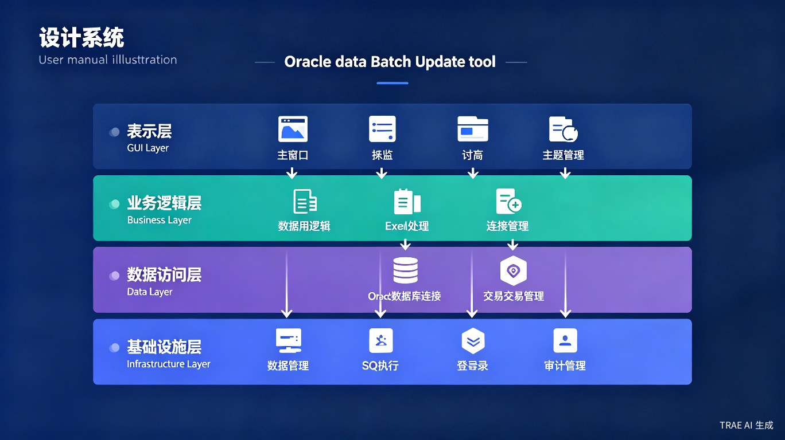
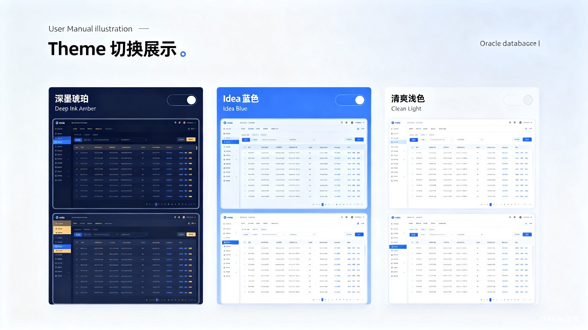

DBForge是一款简单易用的数据库批量更新工具，通过 Excel 文件导入数据，实现 Oracle 数据库表的批量更新操作。系统采用分层架构设计，分为表示层、业务逻辑层、数据访问层和基础设施层，确保代码结构清晰、易于维护。
[v2.9.0+] 自 v2.9.0 起，产品全面升级为多数据库架构，在原有 Oracle 支持基础上新增 MySQL 与 MS SQL Server 支持。通过统一的数据访问层抽象，对不同数据库的驱动管理、SQL 方言适配、标识符包裹方式均实现自动识别与切换，用户只需在连接管理中选择数据库类型即可，无需手工调整任何配置。
[v2.9.0+] 支持 Oracle / MySQL / MS SQL Server，多连接配置切换
支持 .xlsx/.xls 格式，前 50 行预览
支持同时更新多个列，灵活配置
更新前自动备份，失败可回滚
记录所有操作，支持导出日志
深墨琥珀 / Idea 蓝色 / 清爽浅色，各支持深浅色模式
键盘导航，提升操作效率
保存/加载常用配置，快速复用
| 场景 | 说明 | 示例 |
|---|---|---|
| 批量修改员工信息 | 批量更新员工姓名、部门、职位等 | HR 系统数据同步 |
| 批量更新价格数据 | 统一调整商品价格、折扣率 | 电商平台调价 |
| 批量同步基础数据 | 从外部系统同步基础数据 | 主数据管理 |
| 数据修正和清洗 | 批量修正错误数据、统一格式 | 数据治理 |
| 定期批量数据更新 | 周期性批量更新业务数据 | 月结/季结数据维护 |
| 发布方式 | Windows 7 | Windows Server 2008 R2 | Windows 10+ | Windows Server 2016+ | Linux |
|---|---|---|---|---|---|
| exe 打包 | 支持 | 支持 | 支持 | 支持 | 支持 |
| 便携版 | 支持 | 支持 | 支持 | 支持 | 支持 |
| Docker | 不支持 | 不支持 | 支持 | 支持 | 支持 |
